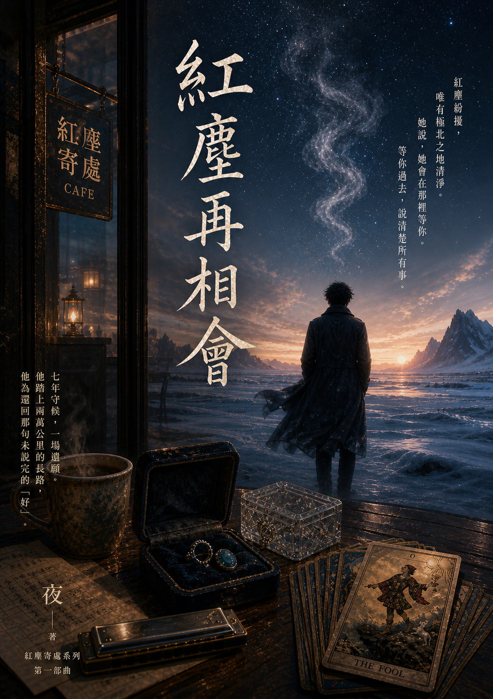
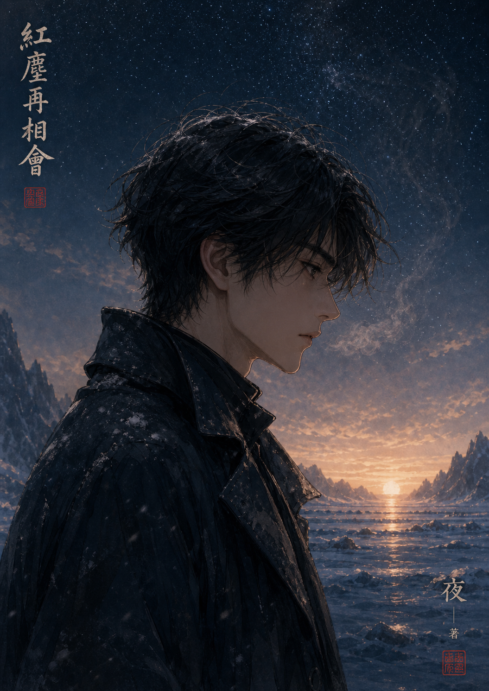

紅塵再相會

（《紅塵再相會》序章
0號愚者
那個女聲從街角的唱片行飄出來的時候，夜的腳步停了。
不是因為那個聲音特別好聽。是因為旋律裡有一個轉折，那個轉折的走法，跟他七年前為照寫過的一首詞，用的是同一個邏輯。
也許你化作了某一片雪 飄進了我看不穿的夢境裡 我不敢接 又捨不得躲 怕一呼吸 你就不見了
七年前他寫那首詞的時候，照坐在他旁邊，說：「這句太繞了，你把它說直一點。」
他說：「直了就沒味道。」
她說：「你的味道是給你自己看的，還是給聽的人聽的？」
他沒有回答。後來那首詞沒改，但他一直記得她那個問題，帶著直接與頑皮，也藏著對真實的執著。
這條街他走了七年，熟悉到連哪塊地磚翹起來、哪個路燈比別人亮半格，都記在身體裡，不需要看。
他能看見路人頭頂的灰霧。那是他身為紅塵仙的神力——前面那個老人的霧是最普通的鉛灰，重而均勻，是那種還有幾十年可以耗的穩定重量；旁邊一個年輕女孩的霧邊緣翻動，說明她快到某個轉折了，但她自己還不知道。每個人的命運都有重量，沉的顯灰，輕的透明，他一眼就能辨出誰快到轉折，誰還有得耗。七年前，他還會在意這些，偶爾出手，改幾條細小的線。
七年後，他只是走過去。
不是看不見。是懶得在意了。
這七年，他只做了一件事。
他買下了「紅塵寄處」，那間咖啡店，那個他跟照第一次坐下來說話的地方，然後每天去開門，每天去關門。磨豆，萃取，擦桌子，補貨，對客人點頭，收錢，找零。到了晚上，他把椅子翻上桌面，鎖門，回家。他從不在店裡多坐，更不敢坐進那兩個靠窗的對座，對座上有一個口琴和一本泛黃的筆記本。
桌上的兩件寶物就像被時間遺忘一樣。
夜就像是一個普通的店長，只是做事，一直做到沒有事可做為止。
他是這座城市最負盛名的填詞人，沒有人知道他長什麼樣子。
現在也沒有人知道他在哪裡。
他就躲在這間咖啡店裡，躲了七年。
________________________________________
手機震動。
他掏出來看。
螢幕上只有一個字：
【照】
他在通訊錄裡，從沒刪過這個名字。不是因為念著，是因為刪掉的那個動作，他做不出來。七年裡他看過這個名字無數次，每次都是滑過去，沒有點開。
這次，這個名字自己亮起來了。
他盯著螢幕，站在街心，手機震了第二下。
他接了。
「喂。」
他的聲音沙啞。這幾年他說話不多，嗓子生了鏽。
「喂……是這張紙條上寫的『阿夜』嗎？」
是個老婦人的聲音。說話很慢，帶著小心翼翼，像是不確定對方願不願意聽她說下去。
「我是照的媽媽。」
夜沒有說話。
「我在她留下的舊筆記本裡，翻到了你的號碼……還有這個盒子。如果你方便的話，明天下午三點，能在這張名片上寫的『紅塵寄處』，見個面嗎？」
電話那頭停頓了一下。夜聽見老婦人的呼吸，有點喘，像是上了年紀、走了很多路之後的那種喘。
「好。」他說。
就這樣掛了。
他把手機放回口袋，繼續站在那裡。路燈把他的影子壓在地上，很長，朝著跟他相反的方向延伸過去。
那一晚他沒有回家，在街上走到天亮。不是因為睡不著，是因為他需要走動，需要腳踩在地上的那個實感，才能確認自己還在這裡，還是真實的。
________________________________________
隔天下午，三點整。
他比照媽媽早到二十分鐘。
這七年他每天來這間店，卻沒有一次是為了自己坐下來。他站在吧台後面，站在廚房裡，站在任何一個需要他做事的地方。他讓店員去招呼客人，讓自己永遠有事情要忙。
店裡有兩個靠窗的位子，面對面。
七年前，他跟照第一次在這裡說話，就是那兩個位子。他記得照坐哪一邊，靠近窗框的那側，下雨的時候雨滴打在玻璃上，她可以側頭看。那個位子，他這七年沒讓任何人長坐，不是規定，是他每次看見有人要坐那裡，他就說：「那邊光線不好，這邊比較舒服。」
今天他走到那張椅子前面，坐下去了。
椅面的木頭是涼的，跟其他椅子沒有任何不同。
他把手放在桌面上，指尖觸到桌面的紋路。這張桌子他擦了七年，每一道紋都摸熟了。
照媽媽推門進來的時候，他看見她的頭頂。
灰霧，很重。不是急事，是那種長年積累下來的重，失去之後的那種，時間沒辦法讓它變輕，只是讓人學會帶著它繼續走。
他低下眼，沒有說什麼。
老婦人在他對面坐下，從帆布袋裡取出一個絲絨首飾盒，放到桌子中間。盒子的絲絨磨損得有些地方露出了底下的硬殼，邊角被摩挲得發亮，顯然被放了很久，也被拿出來摸了很多次。
夜注意到她的手在桌面上停了一下，像是需要確認那個盒子真的放穩了，才願意鬆開。他想開口說什麼——說謝謝她來，說辛苦她了，說她要不要先喝點什麼——但他沒有說。這七年他已經不太知道應該怎麼對人說這些。
「照……她這個人總是很固執。」老婦人的聲音低，不是刻意壓著，是說這話的時候，氣力就只剩這麼多，「這盒子裡，是她一直藏著的東西，有一枚戒指，還有一顆寶石，另外還有一個水晶盒，裡面裝著一副特殊的大阿卡納牌。還有一張紙條，是她親手寫的，說一定要你親自讀。」
停頓。
老婦人抬手擦了擦眼角，沒有說話。停了很久，長到夜以為她已經說完了。
然後她才繼續開口，聲音更低，像是在轉述一句她自己也不完全明白的話：
「她還說……紅塵紛擾，唯有極北之地清淨。」
又是一個停頓。
「她說，她會在那裡等你。等你過去，她會跟你說清楚所有事，所有你想知道的、你放不下的，她都會一一告訴你。」
說完，老婦人自己也沉默下來。
她顯然不明白這句話的意思。她的女兒已經走了七年，她不知道一個走了的人，怎麼等人，在哪裡等。但照反覆交代過她，一定要把這句話原原本本地說出來，一個字都不能少。
所以她說了。
她站起來，看了夜一眼，點了頭，走出去了。
________________________________________
夜坐著，沒有去碰那個盒子。
他知道照已經走了。七年前，他找過，查過，最後確認了那個結論，她在那年的春天，就已經不在了。
但照媽媽說，她會在那裡等他。
他不知道這句話的意思。是安慰，是比喻，還是照在某個他不明白的意義上，真的留下了什麼？
他沒有辦法解釋。他只是把這句話壓進心底，跟那個絲絨盒子一起，壓在最深的地方，等走到那裡再說。
________________________________________
他把盒子拉到自己面前，打開。
一側是一枚戒指，戒托上的嵌槽空著，旁邊靜靜躺著一顆海藍寶石。那個藍，是深水的顏色，不是天空的藍，是往下走、往深處走才會看見的那種藍。寶石表面早已失去了當年的光澤，暗沉發啞，摸上去有種輕微的沙感。
他的指腹在寶石表面停住了。
這不是他記憶裡的那顆藍。
七年前，照把戒指戴上手的時候，那顆寶石在燈下有水光流轉，溫潤得像她看他的眼神。現在它獨自黯淡了七年，粗糙的邊角摩擦著他的指腹，冰冷的觸感卻像烙鐵。
另一側是一個水晶盒，蓋著，能隱約看見裡面有一疊薄薄的牌。
盒子底層壓著一張紙條，摺得很整齊，紙邊泛黃，上面有輕微的指紋痕跡，是照反覆摩挲過的。
他先取出紙條，展開。
照的字。娟秀，橫豎都收得乾淨，筆觸間藏著不易察覺的堅定，也有一絲跳脫的靈氣：
「紅塵仙先生，現在跟你玩一個遊戲。請你按照約定，走計畫好的路線出發，到時候你就會找到答案。」
字不多。他看了很久，手在桌面上沒有動。指節有一瞬間微微用力，然後鬆開了。
他把紙條小心摺好，放回盒底。然後他忽然想起一件事。
很久以前，照問過他：「你看到灰霧的時候，會看到自己的嗎？」
他說不會，神力看不見自己的命運。
照那時候笑了笑，說：「那你怎麼知道你的霧是灰的還是透明的？說不定你的霧不是灰的，是藍色的，跟我那顆寶石一樣。」
他當時沒有接話，只覺得這是她又一次跳躍的玩笑。
現在隔著七年，隔著一張桌子和一顆暗沉的藍寶石，他忽然聽懂了那個玩笑裡面藏的東西。
他取出水晶盒，打開。
二十二張半透明的大阿卡納牌靜靜躺在裡面。他把牌一張一張翻開，攤在桌面上，二十二張，一張不少。
他抽出最上面那張牌。
愚者。
牌面上的人站在懸崖邊，腳邊跟著一隻白狗。不是墜落，是正要踏出那一步。
他看了很久。
想起有一次照翻著塔羅牌的書，指著愚者那頁說：「你知道他是唯一一張編號0的牌嗎？不是1，不是21，是0。你知道這代表什麼？」
他說：「代表他還沒開始。」
照搖頭，說：「代表他隨時可以開始。」
有幾張牌的邊角磨得發亮，牌面上留著淺淺的指紋印。他對著光看，能看見那些紋路。照的手指細長，指節分明，他記得她握筆的樣子、端咖啡的樣子，現在那些動作都鎖在這些牌上，鎖了七年。
他把牌收回水晶盒，連同盒子一起收進大衣內袋。
然後他拿起那枚戒指，和那顆海藍寶石。
他試著把寶石嵌回戒托，嵌槽的角度對不上。他換了個方向，還是對不上。他停了一下，沒有再試，只是把寶石和戒指一起放進胸前口袋，貼著心口的位置。
________________________________________
紅塵仙先生， 你說要走到世界盡頭。 我說好。 現在我先到了。 你來吧。 把那句「好」， 還給我。
________________________________________
夜站起來。
最後看了一眼這張椅子——照坐過的那張，他今天才第一次坐下來的那張。椅面上什麼都沒有，但他的手在椅背上放了一會兒，掌心貼著木頭。
「我走了。」他對著空的對座說，聲音很輕。
店裡的暖黃燈光沒有回應他。窗外的街聲也沒有。
________________________________________
我走了。 不是因為放下了。 是因為， 有些字， 只能走到盡頭， 才寫得出來。
________________________________________
他把椅子推回桌邊，推開門，走出去了。
午後的陽光比他預期的亮。他在騎樓下站了一會兒，讓眼睛適應光線。
風從北邊吹過來。冷的，乾的，帶著一點他叫不出名字的味道。
他把大衣領子攏緊，繼續走。
「紅塵寄處」的燈，繼續亮著。
________________________________________
走了幾步，他停下來。
街邊店面的玻璃櫥窗上映著他的倒影，他頭頂那片塵封七年的灰霧，正從邊緣開始，慢慢鬆動。那些灰色的邊界在變淡，在稀薄，像是冰封的湖面，裂開了第一道細紋。
他盯著玻璃上的自己。
這七年，他從來沒想過要看自己的頭頂。不是不敢，是根本沒意識到自己還能改變。他以為這片灰霧會跟自己一輩子，沉甸甸地壓著，像照留下的那句話沒說完，像他寫了一半就棄置的那首詞，像這七年每一個閉上眼睛就會回來的夜晚。
但現在它鬆動了。
就在他決定要出發的這一刻。
他站在那裡，站了很久。路人從他身邊繞過去，沒有人注意到這個男人正在跟自己的命運對視。
他把手伸進大衣內袋，隔著衣服碰到水晶盒的邊角。那二十二張牌的溫度滲過布料，傳到指尖，微微的，像照的手還握著。
他收回手。
他想起了照說的那句話——說不定你的霧不是灰的，是藍色的，跟我那顆寶石一樣。
現在那顆寶石就在他胸前口袋裡，壓著心口。
也許她說的是真的。也許他的霧從來都不是灰的。只是他一直沒有低頭看過自己。
他轉過身，繼續走。
沒有回頭看「紅塵寄處」，沒有再停下來想什麼。就是走，一步一步，踩在這條他走了七年的街上，往一個從來沒走過的方向去。
風從北邊吹過來，比剛才更明顯了一些，冷冽，乾燥，帶著一種他叫不出名字、但某個深處的感官卻隱約認識的氣息，像是從很遠很遠的地方，穿過兩萬公里才抵達這裡。
他把大衣領子攏緊。
胸前口袋裡的海藍寶石，跟著他的步伐，輕輕晃動。
________________________________________
——出發前的最後一個早晨——
那一晚他在街上走到天亮之後，回到店裡打開門，做了七年來每天做的事。
磨豆。
豆子倒進磨豆機的時候，他停了一下。
他已經訂了足夠的貨讓店員撐著，囑咐過怎麼處理突發狀況，把聯絡方式都留好了。這些事他昨晚就做了，很機械，很有條理，像在交接一份工作，而不是離開一個他守了七年的地方。
但現在豆子在手裡，他突然想不起來這七年他到底在等什麼。
照走的那年，他買下這間店，以為守在這裡，某一天她會推門進來。後來他知道她不會來了，但還是繼續守著，因為他不知道還能做什麼，因為這裡有她的氣息，因為只要他每天來開門，她就還在這個地方某個角落存在著。
他把豆子磨完，萃取，做了一杯他自己不會喝的咖啡，放在靠窗那個位子的桌上。
照那個位子。
他坐在對面，看著那杯咖啡升起的熱氣在暖黃燈光裡散開。
店員八點才來。現在是六點半，店裡只有他一個人，還有那杯沒人喝的咖啡，還有二十二張牌壓在他大衣內袋裡傳來的微弱溫度。
他就那樣坐著，看著熱氣慢慢消散，看著咖啡從燙變溫，從溫變涼。
七年前他為照寫過一首詞，裡面有一句：「把你歸予煙海。」那時候他寫這句，求的是一種意境，是為了讓聽眾在副歌處覺得遼闊。他哪裡知道，有一天這句話是真的，有一天他真的要把什麼東西歸還給海。
店員推門進來的時候，看見他坐在那裡，愣了一下。
「老闆，你今天……？」
「我要出去一段時間，」夜說，「店交給你們。」
店員點頭，沒有多問。這七年他們已經習慣了，這個老闆說話很少，交代清楚就夠，不需要解釋。
夜站起來，把椅子推回桌邊，拿走口琴和泛黃的筆記本。
他在門口停了一下，最後看了一眼靠窗那兩個位子，看了一眼桌上那杯已經涼透的咖啡。
然後他推開門，走出去了。
外面的天剛亮，光線還帶著一點灰白，街上的人不多，各自往各自的方向走。他站在騎樓下，把大衣領子攏緊，讓眼睛適應外面的光線。
胸前口袋裡，海藍寶石的重量貼著心口。
他轉過身，往北走。
沒有回頭。
風從北邊吹過來，乾的，冷的，帶著一種他叫不出名字的氣息。
兩萬公里的起點，就在前方某個他還看不見的地方。他不知道走到那裡要多久，不知道走完這段路的人，還會不會是現在的自己。
但照說她先到了。
她在那裡等他把那句「好」還給她。
他繼續走，步伐穩的，每一步都踩實。
「紅塵寄處」的燈，在他身後，繼續亮著。）
